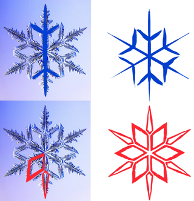
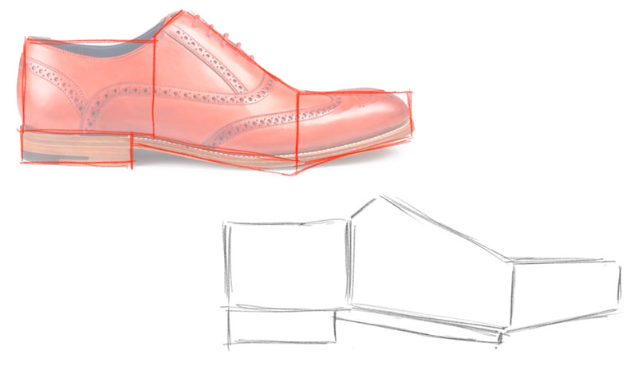
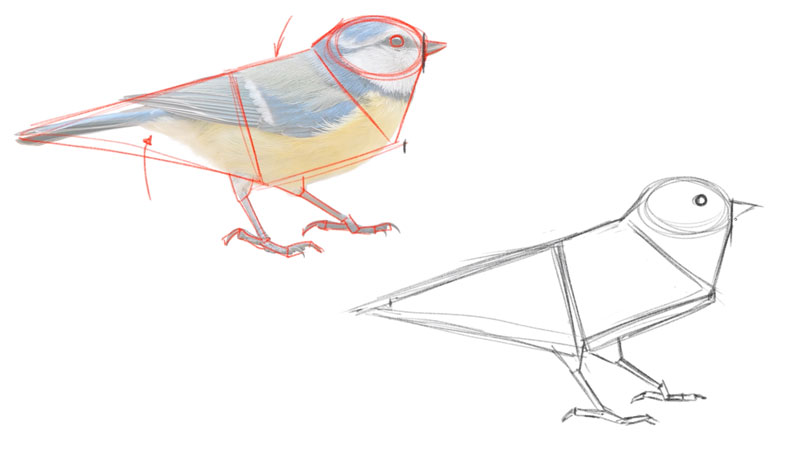
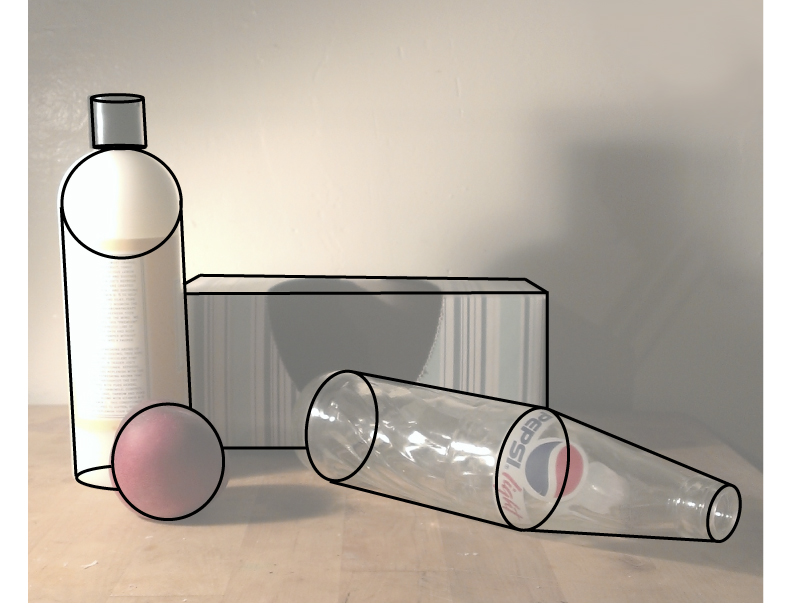
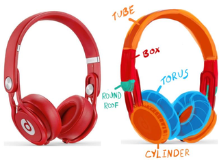
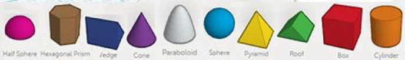
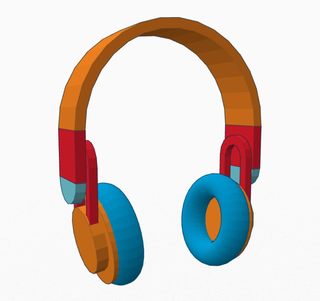
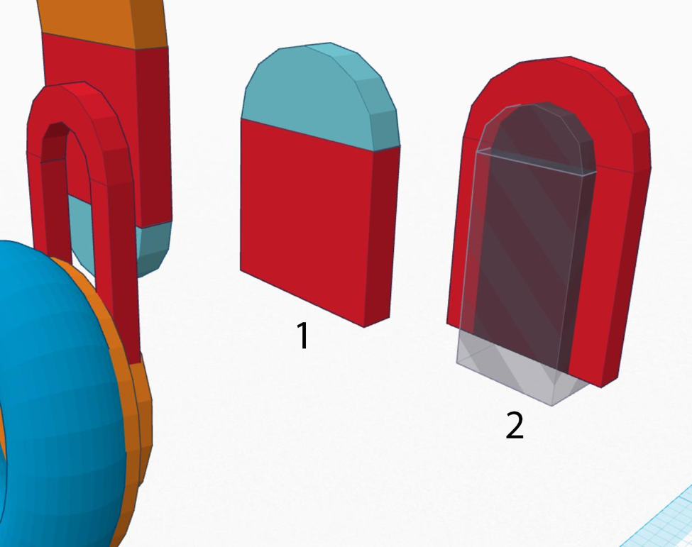
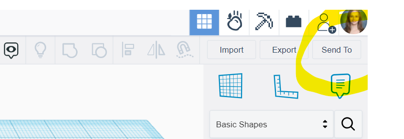
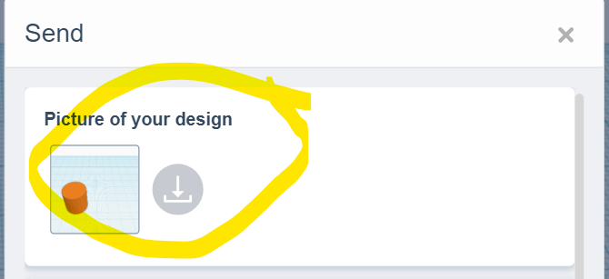

⬡ 3D Modeling • Lesson 4 ⬡
🧸 BUILD YOUR FAVORITE TOY
Pick a toy. Break it into shapes. Build it in 3D.
🧠 Vocab / Vocabulario
Construction – Breaking a complex object into simple shapes before building it / Descomponer un objeto complejo en formas simples antes de construirlo
📣 You've made coins and rings. Now pick any toy or object you love and build it from scratch in TinkerCAD!
Choose Your Toy + Break It into Shapes
🧸 Pick any toy or object (headphones, a car, an animal, a game controller...)
🔍 What shapes do you see? Every object is just simple shapes combined. This is called construction.
Real objects broken into simple shapes:

Snowflake

Shoe

Bird

Still life
Headphones broken into TinkerCAD shapes:

Tube + Box + Torus + Round Roof + Cylinder = Headphones
Open the activity
👉 Open Tinkercad
Use your teacher's class code. Open the Favorite Toy Activity if your teacher assigned it; otherwise start a new 3D design.
Build It in TinkerCAD
🧱 Drag shapes onto the workplane to form the basic outline of your toy
🔗 Group to combine shapes + Hole to carve out spaces
✨ Refine – stretch, shrink, copy/paste, add color and detail
TinkerCAD shapes you can use:

Half Sphere, Hexagonal Prism, Wedge, Cone, Paraboloid, Sphere, Pyramid, Roof, Box, Cylinder
👀 Exemplar

Finished model

Individual parts
📤 Export & Submit
Click "Send To" → download "Picture of your design"
Upload the PNG to this Canvas assignment

Click "Send To"

Download picture
💬 Reflect
In the comments of your submission, finish this sentence in 2-3 sentences:
"The hardest part of building my toy was ___ and I solved it by..."
Word Bank / Banco de Palabras
construction • group • hole • align • resize • shapes • iterate • rotate
⬆️ Level Up
Done? Check out 22 Tips & Tricks for TinkerCAD and apply one to improve your design.
✅ Done?
PNG uploaded + reflection in comments = complete
📣 Ya hiciste monedas y anillos. Ahora elige cualquier juguete u objeto que te guste ¡y constrúyelo desde cero en TinkerCAD!
Elige tu juguete + descompónlo en formas
🧸 Elige cualquier juguete u objeto (audífonos, un carro, un animal, un control de juego...)
🔍 ¿Qué formas ves? Todo objeto es solo formas simples combinadas. Esto se llama construcción.
Objetos reales descompuestos en formas simples:
Copo de nieve
Zapato
Pájaro
Naturaleza muerta
Audífonos descompuestos en formas de TinkerCAD:
Tube + Box + Torus + Round Roof + Cylinder = Audífonos
Abre la actividad
👉 Abre Tinkercad
Usa el código de clase de tu maestro/a. Abre la actividad Favorite Toy si fue asignada; si no, empieza un diseño 3D nuevo.
Constrúyelo en TinkerCAD
🧱 Arrastra formas al plano de trabajo para crear el contorno básico
🔗 Group para combinar formas + Hole para tallar espacios
✨ Refina – estira, encoge, copia/pega, agrega color y detalles
Formas disponibles en TinkerCAD:
Media esfera, Prisma, Cuña, Cono, Paraboloide, Esfera, Pirámide, Techo, Caja, Cilindro
👀 Ejemplo
Modelo terminado
Partes individuales
📤 Exporta y envía
Haz clic en "Send To" → descarga "Picture of your design"
Sube el PNG a esta tarea en Canvas
Clic "Send To"
Descarga la imagen
💬 Reflexión
En los comentarios de tu envío, completa esta oración en 2-3 oraciones:
"La parte más difícil de construir mi juguete fue ___ y lo resolví..."
Banco de Palabras / Word Bank
construcción • agrupar • hueco • alinear • redimensionar • formas • iterar • rotar
⬆️ Sube de Nivel
¿Terminaste? Mira los 22 Tips & Tricks para TinkerCAD y aplica uno para mejorar tu diseño.
✅ ¿Listo?
PNG subido + reflexión en comentarios = completo